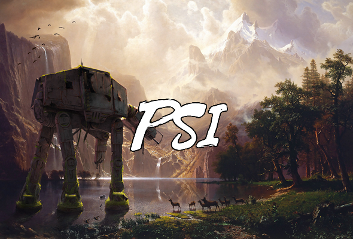

About Us
- GL: Spraggsyjr
- Officers: TheSmokey, Rhox, Gatsu, khandog63, nemesis, and maz897
- Guild Reset: 8:30pm UTC
- Zerg Raid times: Rotation for Rancor, 8:30pm UTC for HAAT
- Info: Psi is a hAAT guild designed to give new members an organized and dedicated starting point in SWGOH. We have progressed to doing T7 Rancor raids.
Raid Info
Rancor Raid:
- Raids are Launched at 8:30pm UTC.
- Tier 7: For the first 24 hours, everyone can post only ZERO DAMAGE. This allows everyone to get into raid rankings and get a reward. [post 0 damage = attack with one character only the side guards, never touch the central one. Don’t use any AOE ability]. See General Rules for a link to a YouTube video describing how to do this if you’re unsure.
- At the end of 24 hours, an Officer will call ZERG. Do not post damage before the officer calls ZERG. (ZERG = “free for all”: everyone can attack as many times as they want until the Rancor is dead)
- When ZERG is called: do not post ANY DAMAGE until 10 minutes after Zerg is Called.
- Posting damage before Zerg has been called will result in you sitting out the rest of the raid
AAT Rules:
- Raids are Launched at 8:30pm UTC.
- For the first 24 hours, everyone can post only ZERO DAMAGE. This allows everyone to get into raid rankings and get a reward. [post 0 damage = attack with one character only the side guards, never touch the central one. Don’t use any AOE ability]. See General Rules for a link to a YouTube video describing how to do this if you’re unsure.
- At the end of 24 hours, an Officer will call ZERG. Do not post damage before the officer calls ZERG. (ZERG = “free for all”: everyone can attack as many times as they want until the HAAT is dead)
- Please use all available squads when possible/feasible. Don’t wait on the more powerful guild members to finish phase 1 and/or 3 so that you can “phase snipe” damage on phase 2.
- Feel free to post screenshots of your damage and rewards
- Posting damage before Zerg has been called will result in you sitting out the rest of the raid
The Sith Triumvirate Rules:
- Raids are launched as soon as possible. Currently doing T5.
- Zerg from start.
- We require you to do damage at least once per day.
- 2 million damage is required for each instance of the raid
- Please use 5 teams and at least auto once per day(Your characters reset daily).
TB Rules
- At the beginning of each phase, an officer will call platoon assignments. Do not deploy to any platoons prior to this announcement/to platoons that are not to be filled.
- Hold off an ALL combat/special missions until 8:30 UTC (raid time).
- Try to wait to deploy characters (other than those used for combat missions). This will allow the guild to get the most use out of those contributions. We understand that not everyone will be able to wait until right before phase reset, so try to wait for an appropriate time for yourself.
General Rules
- Be kind to each other. Treat others with respect and try to keep any bickering to PMs
- You must check discord every 48 hours at a minimum. We would recommend that you log on at least 1 or 2 times per day so that you don’t miss anything but the minimum is every 2 days. Please don’t be inactive.
- Please try to keep all content you post PG, we have some younger players among us so we would like to keep our server as friendly as possible. That being said, if something slips out here or there, we won’t punish you as long as it doesn’t become consistent.
- Always respect your officers. Our officers work very hard to make Sigma what it is today. Inevitably, sometimes people will make mistakes. It is important that whatever anyone does you always treat them fairly and with respect. If an officer contacts you about something they believe you’ve done but you haven’t done it, tell them kindly, don’t get cross.
- If you have a concern please speak to the officers about it so we can sort it out before it becomes a big issue
- If you’re unsure of certain rules, please check this video out.
Ticket Contributions
In Psi we would like every member to get 600 tickets per day if possible; however this isn’t always possible so we ask for a weekly average of 3500 (500 per day). This means that if you miss 1 day you will still be higher than the bare minimum.
If you’ll be away from the game, post in #leave_of_absence.
Punishments
In Psi, we use a strike system. This means that if you violate a rule you will be given a strike. This applies to all the rules however if you break one of the general rules you will likely just be given a warning.
Strikes are recorded and you are punished as follows:
- 1st Strike = Warning
- 2nd Strike = Miss Next Rancor/AAT Raid
- 3rd Strike = Removal from the guild
After one month of having a strike, you will have it taken away. The wait time is independent for each strike you have